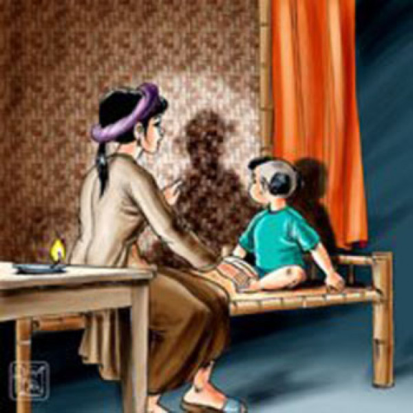

1. Tình huống truyện và chi tiết chiếc bóng
Chi tiết chiếc bóng là một sáng tạo nghệ thuật đặc sắc. Từ một hình ảnh vô tri, Nguyễn Dữ đã tạo nên sự hiểu lầm dẫn đến bi kịch của Vũ Nương. Đồng thời, chính chiếc bóng cũng góp phần giúp Trương Sinh nhận ra sự thật.
2. Nghệ thuật dựng truyện
Câu chuyện được xây dựng theo trình tự hợp lý, có sự phát triển từ cuộc sống gia đình yên bình đến mâu thuẫn, cao trào là cái chết của Vũ Nương và kết thúc bằng yếu tố kỳ ảo. Cách dựng truyện tạo nên sức hấp dẫn và làm nổi bật bi kịch của nhân vật.
3. Xây dựng nhân vật qua lời nói và hành động
Vũ Nương được khắc họa qua những lời nói và hành động giàu tình cảm: thủy chung với chồng, hiếu thảo với mẹ chồng và hết lòng chăm sóc con. Trái lại, sự hồ đồ và đa nghi của Trương Sinh được thể hiện qua cách ứng xử khi nghe lời nói của bé Đản.
4. Sử dụng yếu tố kỳ ảo
Những hình ảnh như Linh Phi, thủy cung và cuộc trở về của Vũ Nương trên dòng Hoàng Giang tạo nên màu sắc kỳ ảo. Yếu tố này vừa làm câu chuyện hấp dẫn, vừa thể hiện ước mơ về công lý và sự giải oan cho người phụ nữ.
5. Kết hợp tự sự và biểu cảm
Tác phẩm vừa kể lại sự việc vừa bộc lộ niềm thương cảm trước số phận của Vũ Nương. Sự kết hợp giữa kể chuyện và cảm xúc khiến bi kịch của nhân vật trở nên sâu sắc, giàu sức lay động.
Nhờ sự kết hợp giữa tình huống truyện chặt chẽ, chi tiết nghệ thuật giàu ý nghĩa và yếu tố kỳ ảo, tác phẩm để lại ấn tượng sâu sắc về số phận con người trong xã hội xưa.
